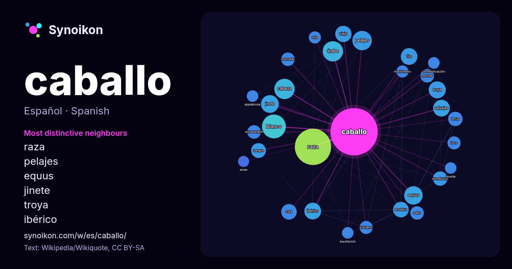

Español · lista de palabras del día
caballo
“horse” · Las palabras encontradas a su alrededor en 1612 apariciones de Wikipedia, Wikiquote.

Vecinos más característicos
- raza 51×
- pelajes 31×
- equus 29×
- jinete 25×
- troya 24×
- ibérico 23×
- árabe 23×
- salvajes 21×
- blanco 21×
- tiro 21×
- andaluz 20×
- cabeza 19×
- ferus 18×
- cola 17×
- viejo 16×
- doméstico 16×
- purasangre 16×
- montar 15×
- lusitano 15×
- montado 15×
× = cuántas veces más que en el texto general de Wikipedia.
Vecinos más frecuentes
- raza 109
- blanco 47
- carreras 35
- árabe 34
- cabeza 34
- hombre 34
- pelajes 31
- equus 28
- llamado 27
- jinete 26
- troya 24
- ibérico 23
- nombre 23
- salvajes 23
- tiro 23
- conocido 22
- viejo 22
- andaluz 20
- cola 20
- color 20
En contexto
- hembra del caballo se le llama yegua y a las crías, si son machos, potros o potrillos, y si son hembras, potras. La cría y utilización del caballo por parte Wikipedia snippets · Equus ferus caballus
- tipo de «caballos», por ejemplo: en España, normalmente CV; en Uruguay y Argentina, normalmente HP. Caballo fiscal Real Academia Española. «Caballo de vapor» Wikipedia snippets · Caballo de vapor
- guerra montados en caballos ligeros y a la hora de combatir, cuando vestían armaduras pesadas, pasaban a un caballo más pesado. El caballo empleado para arrastrar Wikipedia snippets · Cometido del caballo en la guerra
- El caballo de Troya fue un artilugio con forma de enorme caballo de madera que se menciona en la historia de la guerra de Troya y que según este relato Wikipedia snippets · Caballo de Troya
- El caballo árabe (en árabe: حصان عربي) o simplemente el árabe, es una raza de caballos con raíces históricas en Asia occidental. Con una forma de cabeza Wikipedia snippets · Caballo árabe
- tradición y una magnífica reputación como caballo de aprendizaje en las escuelas superiores de equitación. El caballo frisón cautiva nuestra mirada durante Wikipedia snippets · Frisón (caballo)
- 1907: Caballo de Fuego. Del 11 de febrero de 1918 al 31 de enero de 1919: Caballo de Tierra. Del 30 de enero de 1930 al 16 de febrero de 1931: Caballo de Wikipedia snippets · Signo del caballo
- colores de caballos, que agrupa en rojizos, blanquecinos, mezclados y negruzcos. La capa de un caballo es la pigmentación que presenta el caballo en su pelaje Wikipedia snippets · Pelajes del caballo
Más palabras
- agua
- arte
- bosque
- camino
- campana
- canción
- ciencia
- ciudad
- clima
- comida
- corazón
- desierto
- dinero
- dios
- espejo
- estrella
- familia
- fuerza
- gato
- historia
- invierno
- isla
- jardín
- lengua
- lluvia
- madre
- mapa
- miel
- montaña
- muerte
- naturaleza
- oro
- otoño
- pan
- perro
- puente
- reloj
- sal
- salud
- silencio
- sombra
- tiempo
- tormenta
- trabajo
- tren
- té
- verano
- verdad
- vida
Precalculado el 2026-10-09 con los ajustes predeterminados (±5 palabras, corpus mediano). El mapa interactivo puede actualizarlo con datos en vivo.
Interfaz traducida automáticamente; se agradecen correcciones.